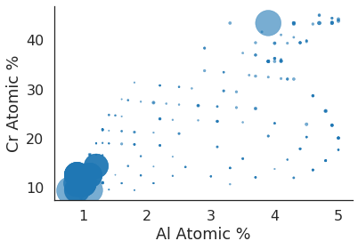

Example Analysis¶
A high-throughput investigation of Fe–Cr–Al as a novel high-temperature coating for nuclear cladding materials¶
Article Link
“Bunn, Jonathan Kenneth, Randy L. Fang, Mark R. Albing, Apurva Mehta, Matthew J. Kramer, Matthew F. Besser, and Jason R. Hattrick-Simpers.”A high-throughput investigation of Fe–Cr–Al as a novel high-temperature coating for nuclear cladding materials.” Nanotechnology 26, no. 27 (2015): 274003.”
Example: We want to plot some of the data from the above study using MDF.
In [1]:
from io import StringIO
from multiprocessing.pool import Pool
from mdf_forge.forge import Forge
import matplotlib.pyplot as plt
import numpy as np
import pandas as pd
import seaborn as sns
%matplotlib inline
sns.set_context('poster')
sns.set_style('white')
Retrieve Records¶
In [2]:
mdf = Forge()
res = mdf.match_field("mdf.source_name","fe_cr_al_oxidation").match_field("mdf.resource_type", "record").search()
print("Found {results} matches".format(results=len(res)))
Found 1401 matches
In [3]:
res[0]
Out[3]:
{'fe_cr_al_oxidation': {'atomic_composition_percent': {'Al': 3.1,
'Cr': 26.5,
'Fe': 70.5},
'temperature_k': 420.0},
'mdf': {'collection': 'Fe-Cr-Al Oxidation Studies',
'composition': 'FeCrAl',
'elements': ['Cr', 'Fe', 'Al'],
'ingest_date': '2017-08-04T21:26:53.296946Z',
'links': {'csv': {'globus_endpoint': '82f1b5c6-6e9b-11e5-ba47-22000b92c6ec',
'http_host': 'https://data.materialsdatafacility.org',
'path': '/collections/Fe_Cr_Al_data/420 K/420 K Point 104.txt'},
'landing_page': 'https://materialsdata.nist.gov/dspace/xmlui/handle/11256/836#104',
'parent_id': '5984e69cf2c00439c790bf54'},
'mdf_id': '5984e69df2c00439c790bfbc',
'metadata_version': '0.3.2',
'resource_type': 'record',
'scroll_id': 104,
'source_name': 'fe_cr_al_oxidation',
'tags': ['csv'],
'title': 'Fe-Cr-Al Oxidation - 420 K Point 104'}}
Download data using HTTP¶
In [4]:
def format_get_cr_al_params(d):
tmp_d = {}
for key in d['atomic_composition_percent']:
tmp_d[key] = float(d['atomic_composition_percent'][key])
tmp_d['temperature_k'] = float(d['temperature_k']) if d['temperature_k'] != "Room" else 297.15 # Avg room temp
return tmp_d
def get_fe_cr_al(r):
res = next(mdf.http_stream(r))
params = format_get_cr_al_params(r['fe_cr_al_oxidation'])
df = pd.read_csv(StringIO(res), sep="\t", header=None, names=["twotheta","counts"])
return (params, df)
n_workers = 10
n_points = 300
mp = Pool(n_workers)
mdf_data = mp.map(get_fe_cr_al, res[:n_points])
mp.close()
mp.join()
Aggregate Results¶
In [5]:
## Choose peak integration range (this is ~ a range for the Fe3O4 oxide)
integration_peak = 42.8
integration_width = 1.
integration_range = (integration_peak-integration_width,integration_peak+integration_width)
results = []
for data, df_tmp in mdf_data:
result = {"data":{},"aggregation":0}
result['data'] = data
agg = df_tmp[(df_tmp.twotheta>integration_range[0]) &
(df_tmp.twotheta<integration_range[1])]['counts'].sum()
result['aggregation'] = agg
results.append(result)
# Calculate normalization of the aggregation
m = max([r["aggregation"] for r in results])
for r in results:
r["aggregation_norm"] = r["aggregation"] / m
Plot Results in Various Ways¶
In [6]:
x = [r["data"]["Al"] for r in results]
y = [r["data"]["Cr"] for r in results]
s = [[r["aggregation_norm"]*1000 for r in results]]
fig, ax = plt.subplots()
plt.scatter(x, y, s=s, alpha=0.6)
ax.set_xlabel("Al Atomic %")
ax.set_ylabel("Cr Atomic %")
sns.despine()
plt.show()

In [7]:
ax = sns.jointplot(np.asarray(x), np.asarray(y), kind="kde",
shade=True, stat_func=None, size=7).set_axis_labels("Al Atomic %", "Cr Atomic %")

In [8]:
ax = sns.jointplot(np.asarray(x), np.asarray(y), kind="hex",
gridsize=7, size=7, stat_func=None).set_axis_labels("Al Atomic %", "Cr Atomic %")